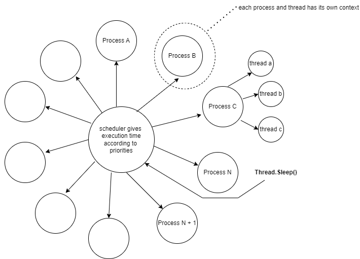

Лекція 12
Паралельність дає вам швидкість, але й створює гонки. Синхронізація — це ваша плата за спільний стан.

Main.Метод Start не блокує ваш головний потік. А от Join чекає, доки інший потік закінчить свою роботу.
Thread t = new Thread(Worker);
t.Start();
t.Join();Створювати новий Thread на кожну дрібницю — це дуже дорого. Робіть так лише тоді, коли вам потрібне довге окреме життя потоку.
Пул повторно використовує вже створені потоки. Будь-яке дрібне завдання кладіть саме сюди, а не створюйте new Thread.
ThreadPool.QueueUserWorkItem(Worker, "Hello, world!");// два потоки роблять n++
// часто отримаєте не 20000Спільна змінна без синхронізації неминуче призведе до гонки. Ваш результат буде непередбачуваним.
lock (_sync) { n++; }
// не lock(this) — хтось ззовні
// може замкнути той самий об’єктПам’ятайте, що поруч існують Mutex і Semaphore, які стануть у пригоді, коли ваша синхронізація ширша за один процес.
Task планує ваше середовище виконання.await не створює потік на кожне очікування — воно звільняє потік, поки ви чекаєте на відповідь від мережі чи диска.static async Task Main() {
var n = await Task.Run(() => 2 + 2);
Console.WriteLine(n);
}Thread.ThreadPool або Task.Run.async та await.Lazy<T>, як ви це робили на лекціях 06 і 09.Після лекції
Окремої лабораторної роботи з потоків у нас немає. Перевірте себе за запитаннями курсу й уважно розберіть код у папці code/lecture-12-multithreading.